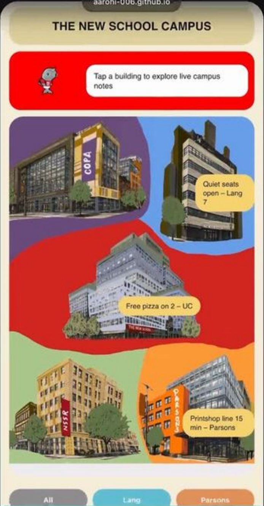

Mobile app · Wayfinding
The New School Campus App
An interactive digital guide that helps students find their way across a campus spread over many buildings, with live tips shared by other students.

Challenge
The New School is spread across separate buildings, so students struggle to find classrooms, resources and campus-specific information. The opportunity: one mobile platform that combines wayfinding with knowledge shared by students.
Research
- The New School's own websites: how campus information is presented today, and where it gets scattered
- An Are.na research board: references for maps, wayfinding and campus apps
- Students' real struggles: what goes wrong when people try to find different buildings and locations
Goals
- Simplify navigation
- Improve campus discovery
- Highlight hidden resources
- Strengthen campus connections
Design system
Built on Neue Display Random, The New School's own typeface, so the app feels connected to the university's identity while staying playful. Each school gets its own color.
Experience
- Interactive campus navigation: maps and floor-by-floor building layouts.
- Micro-local knowledge: student tips, study spots and hidden resources, like "Quiet seats open – Lang 7".
- School-based exploration: move between Parsons, University Center, Lang, NSSR and COPA.
Skills
Built with
Figma, then HTML, CSS and JavaScript, coded with help from an AI coding assistant.